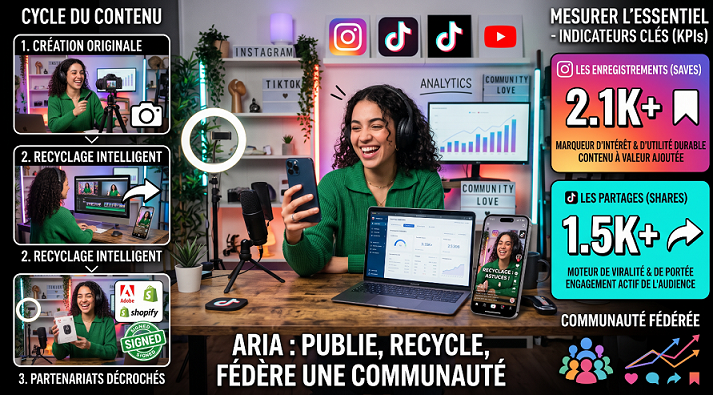

Indicateurs de vanité
Le nombre d’abonnés, les vues totales et les mentions J’aime indiquent surtout la portée. Ils peuvent sembler impressionnants sans prouver que le contenu a été utile.

Analyser les bons indicateurs, améliorer ses contenus et transformer ses abonnés en communauté engagée.
Publier régulièrement ne suffit pas. Pour progresser, il faut comprendre ce qui résonne vraiment auprès du public, repérer les contenus utiles et transformer les données en décisions concrètes.
Cette formation apprend à suivre les indicateurs de croissance pertinents, analyser les publications et construire une audience qui vous appartient.
Sélectionnez les réponses correctes.
Le nombre d’abonnés, les vues totales et les mentions J’aime indiquent surtout la portée. Ils peuvent sembler impressionnants sans prouver que le contenu a été utile.
Les enregistrements, partages, commentaires, réponses et taux de complétion montrent comment le public interagit réellement et si le contenu atteint son objectif.
Suivez les enregistrements et les partages. Un Reel enregistré possède une valeur durable et peut continuer à être recommandé.
Le taux de complétion est essentiel. Une vidéo regardée jusqu’à la fin retient l’attention, même si elle est courte ou simple.
Analysez les réponses, sondages, questions et curseurs. Les interactions signalent une conversation, pas seulement un passage.
Les métriques sont des instructions : publier → mesurer → apprendre → itérer. Faites un bilan hebdomadaire de quinze minutes, puis un examen mensuel pour repérer les tendances de vos piliers et plateformes.
La croissance organique dépend de trois éléments : découvrabilité, régularité et engagement. Répondez aux commentaires dans la première heure, créez des contenus qui invitent à participer et reconnaissez vos habitués.
Une question concrète comme « Où placez-vous votre micro-entraînement ? » génère une conversation plus facilement qu’un simple « Abonnez-vous ».
Les abonnés sociaux restent dépendants des plateformes et de leurs algorithmes. L’objectif est de créer un pont vers une liste e-mail, un site ou une communauté contrôlée.
Un lead magnet — checklist, guide de sept jours ou suivi d’habitudes — offre une valeur concrète en échange d’une adresse e-mail et prolonge la relation au-delà du fil d’actualité.
Apprenez à lire vos données, répéter ce qui fonctionne et créer une relation durable avec votre audience.